Visual styles can be set for a grid by using the VisualStyle property. The following code illustrates this:
|
[XAML]
<syncfusion:GridDataControl x:Name="dataGrid2" AutoPopulateColumns="False" AutoPopulateRelations="False" ItemsSource="{StaticResource ordersSource}" syncfusion:SkinStorage.VisualStyle="Office2007Blue" /> |
|
[C#]
SkinStorage.SetVisualStyle(dataGrid2, "Office2007Blue"); |
The following images show different visual styles applied to the grid.
Figure 147: Office14Blue
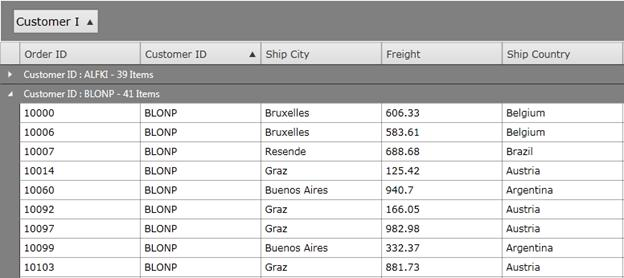
Figure 148: Office14Black
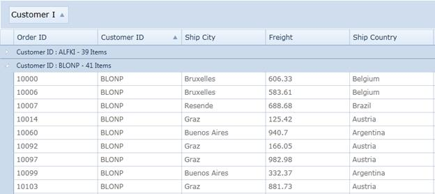
Figure 149: Office14Silver
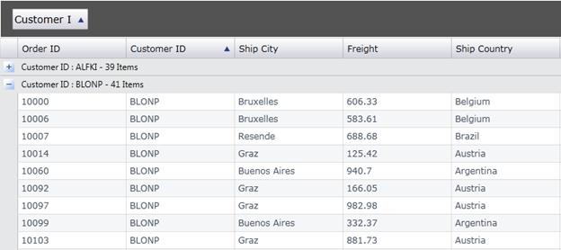
Figure 150: Office2007Black
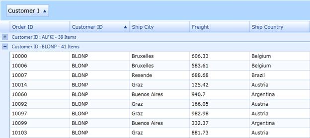
Figure 151: Office2007Blue
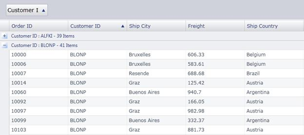
Figure 152: Office2007Silver
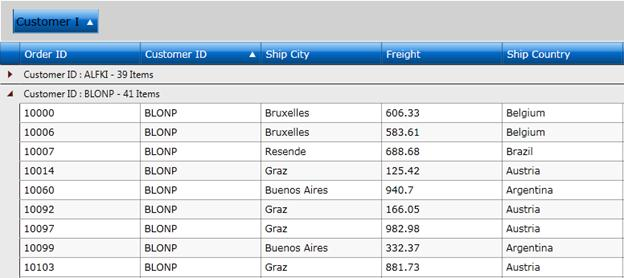
Figure 153:ShinyBlue
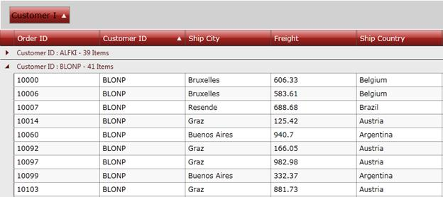
Figure 154: ShinyRed
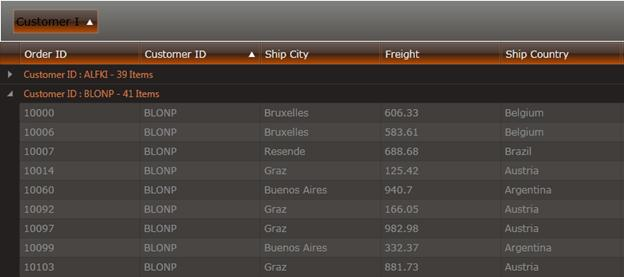
Figure 155: SunBlack
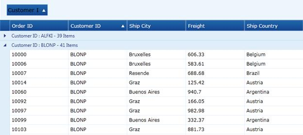
Figure 156: Syncfusion
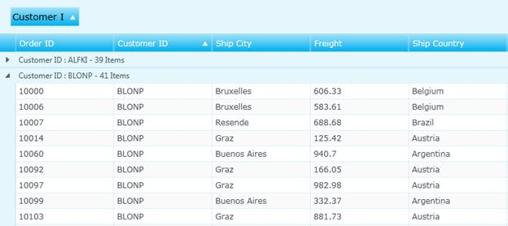
Figure 157: Twilight Blue
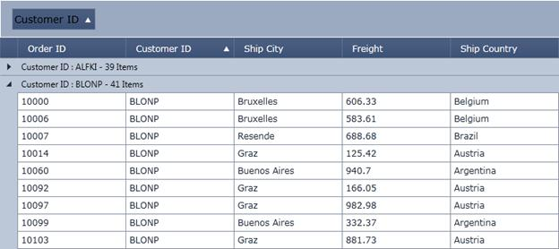
Figure 158: VS2010
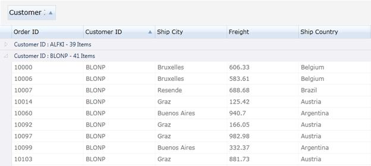
Figure 159: Windows7
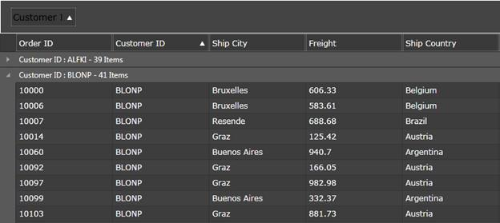
Figure 160: Blend
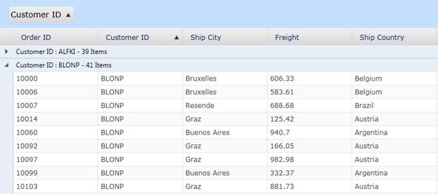
Figure 161: Bureau Blue
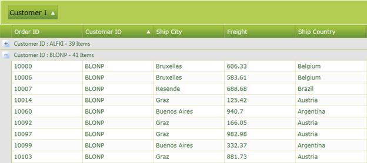
Figure 162: Glassy Green

Figure 163: Metro